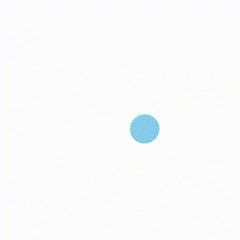

今現在、６種類のテンプレートを用意しています！（今後増やしていく予定です…！）
①
ws_rebound({}); // リバウンド
②
ws_pulse({}); // パルス
③
ws_whirl({}); // ウィール
④
ws_spiral({}); // スパイラル
⑤
ws_grid({}); // グリッド
⑥
ws_line({}); // ライン
使い方は簡単で、各オブジェクト名を「Script.jsファイル」で ws_rebound({});
のように呼び出すだけで利用できます。
また、オブジェクトの引数部分（ {}の中）に size: 80 や speed: 0.05
のように入力することで、図形の大きさや形、動きなどを自由に変更してオリジナル作品を作成できます！
【 例えばこんな感じ… 】
ws_rebound({
num: 5,
size: 70,
R: 0.7,
speed: 10,
cols: [color('blue')],
opacity: 0.5
});
また、プログラミングでは「乱数」という考え方があります。これは、指定した範囲の中からランダムに数値を生成する機能です。たとえば、speed: [2, 15] や opacity: [0.5, 1] のように、値の範囲を指定するだけで、その間のランダムな数値が使われます。今回のテンプレートでは、★マークのついた引数でこの乱数表現を使うことができます！
【 例えばこんな感じ… 】
ws_rebound({
size: [30,70],
R: [0.8,1],
speed: [5, 10],
opacity:[0.3, 0.7],
});
① num: 数値 → 図形の数
② ★size: 数値 → 図形の大きさ（1辺あるいは直径の長さ）
③ ★R: 数値 → 角の丸さ（0～1）0が四角、1が円
④ speed: [数値Ａ, 数値Ｂ] → 図形の動く速さ数値Ａ: 回転速度、数値Ｂ: 収縮/膨張速度
⑤ colors: [color('色の名前')] → 図形の色
⑥ ★opacity: 数値 → 不透明度（0～1）0が透明、1が不透明
⑦ direction: [数値Ａ, 数値Ｂ] → 図形の動く方向数値Ａ: -1は外から内（収縮）、1は内から外（膨張）に向かって円を描く、数値Ｂ: -1は左回り、1は右回り
数値ＡＢには-1または1を入力
⑧ fluctuate: 'on'/'off' → 収縮と膨張を交互に繰り返すかどうか（規定値は'on'）
⑨ diameter: 数値 → 回転する範囲（直径）width以下の数値
ws_whirl({num: 7, size: [30,80], R: [0.5,1], speed: [5,18], colors: [color('green')]});
ws_whirl({opacity: [0.5, 1],direction: [1, -1],fluctuate: 'off',diameter: [200]});

ws_spiral({size: 70, R: 0, speed: [80, 10], colors: [color('skyblue')] });
ws_spiral({opacity: 0.9, direction: [-1, 1], diameter: 150 });
ws_line({num: 50, size: [1, 100], weight: [5, 30], speed: [20, 60]});
ws_line({cols: [color('green')], opacity: 0.8, angle: 45});